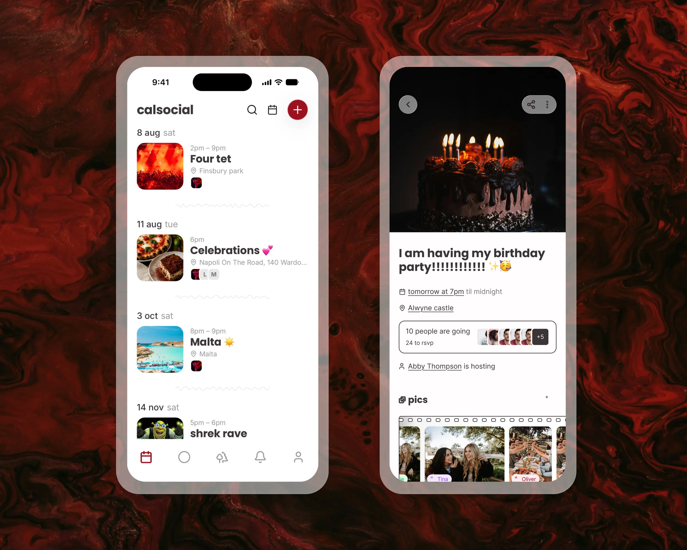
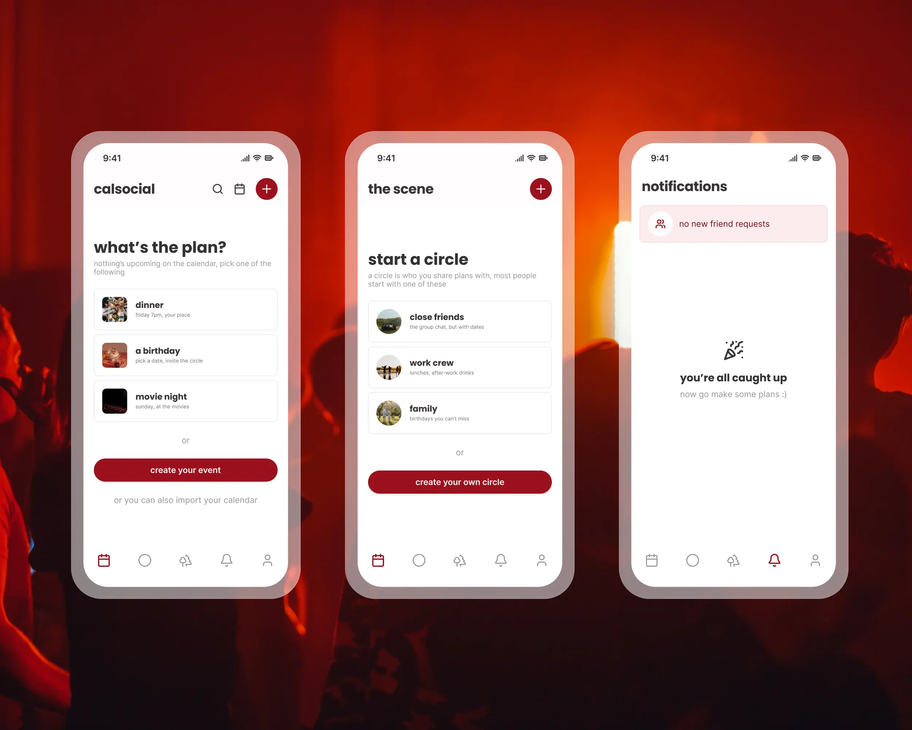
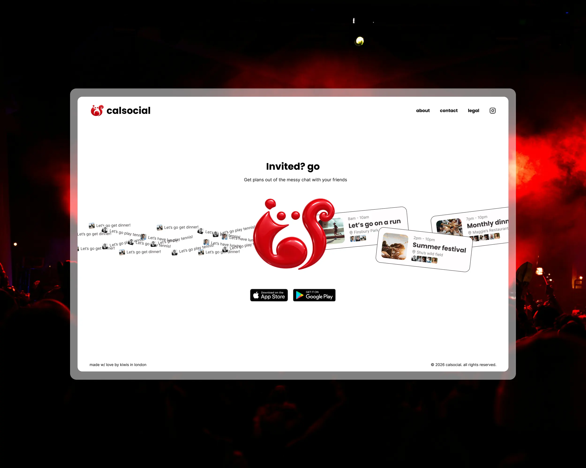
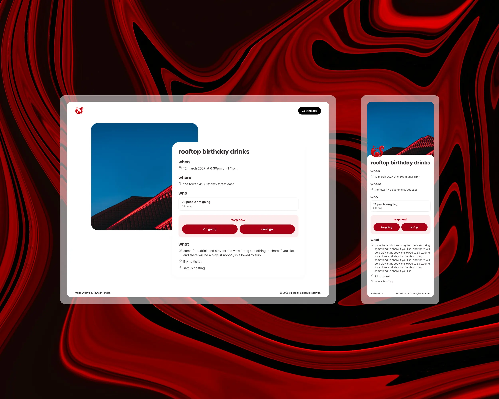

2026 – Now
CalSocial
About
A friend of mine built CalSocial, and it is entirely his vision. I came on to help him get there, sharpening the design and the UX and opening it up to people who would never install an app just to see one plan.
Outcomes
I reworked the calendar and the event view, the two screens the app actually lives in. Every plan now carries a photo, its time and place, and the faces of who is going, so the list reads like something to look forward to rather than a table of rows. Empty states stopped being dead ends: an empty calendar suggests a first plan or offers to pull one in from the calendar you already keep, and the other quiet corners of the app point somewhere instead of just sitting blank.


The other side of the job was reach, and it turned out to be the bigger lever. Every plan is now a web page too. Open the link from the chat, see the when, where and who, tap going or can’t. No install, no calendar setup, no account until you want one. It meets people where they already are, and more of them turn up now that turning up costs nothing.


Problem
Both of those went at the same root problem: CalSocial asked for more than the group chat it wanted to replace.
The plans lived in that chat. Someone floats an idea, a date gets half agreed, and it scrolls away under four hundred messages, address and all. The friends who had the app still drifted back to the thread, because opening it was a step and the chat was already open.
For everyone else the app was a closed door. To see a single plan you had to download it and wire it into your Google Calendar. Most people just did not, so the plan stayed in the chat and the app stayed empty.
Learnings
Moving a product you do not own is a different craft. On my own work I just decide. Here the owner has final say on everything that ships and feels every pixel of it, so the job is as much about making the case as making the design. It is slower, and now and then it is frustrating, but learning to move something through someone else’s conviction rather than around it has been the most useful part.
Designing for a friend group is a trap as much as a gift. They will use anything you put in front of them and tell you it is great, so the real signal is not what they say, it is whether the plan actually happened.